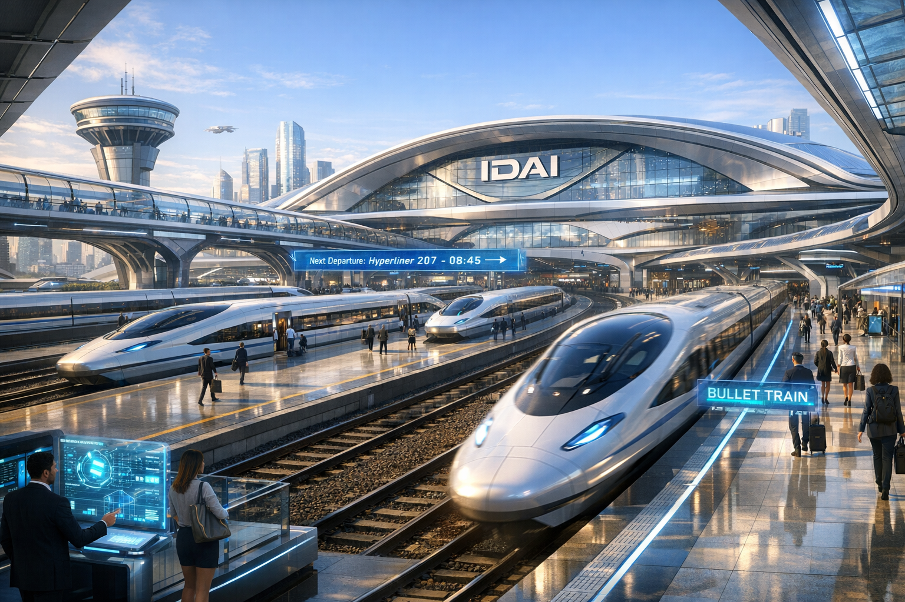
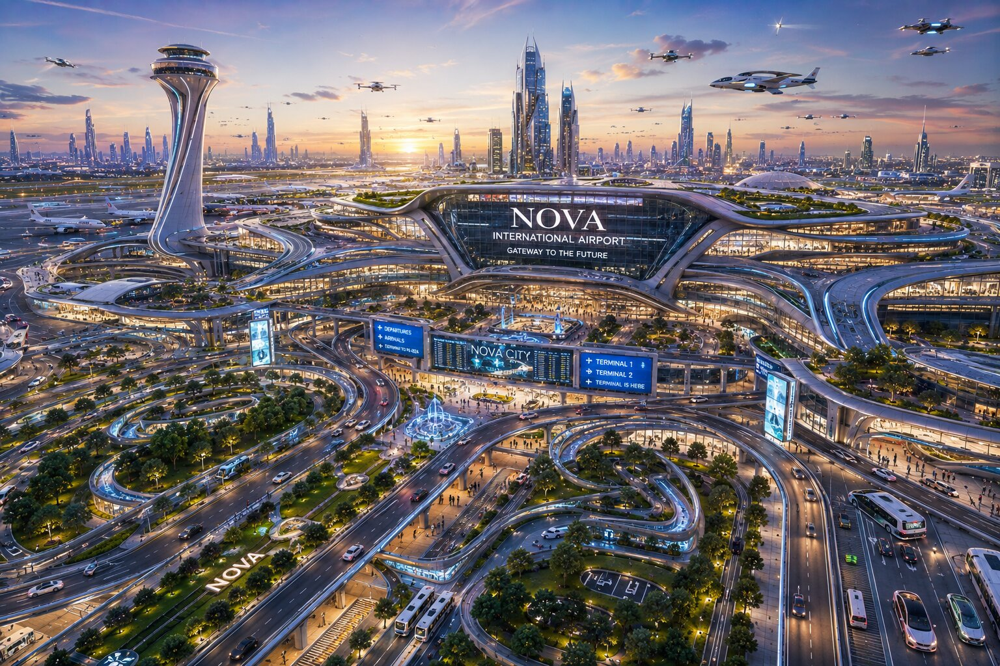
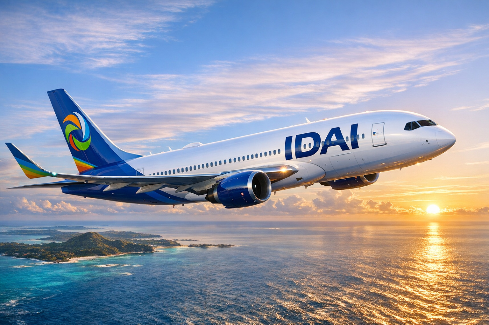
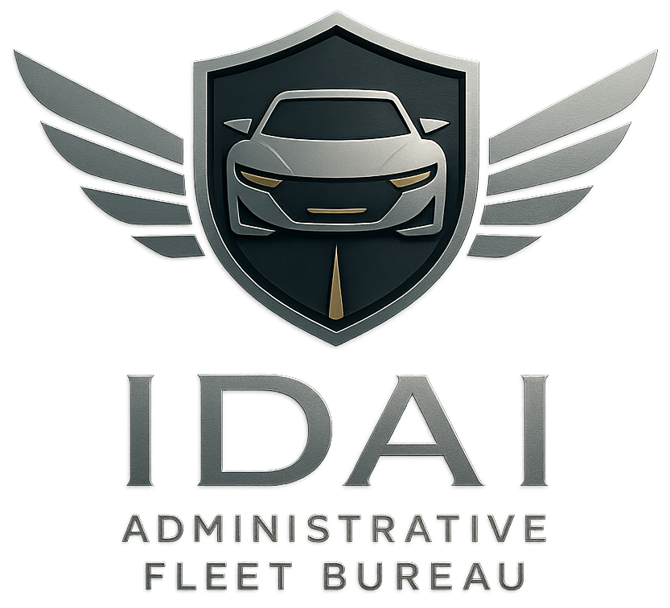

Sovereign Mobility Network: High-Speed Pathways of IDAI
The IDAI Transportation System is a visionary network that blends futuristic engineering with ceremonial symbolism, designed to embody the state’s philosophy of “Inspiring Trust Through Innovation.” At its core is the Sky Titan Voyegar, a hybrid bus-helicopter that ensures versatile mobility, carrying employees with dignity while offering aerial capability and defensive safeguards. Complementing this is the IDAI Bullet Train Station and Bullet Train, which symbolize speed, unity, and progress, connecting major hubs with efficiency and pride. The IDAI International Airport serves as a global gateway, marked by grandeur and openness, while the IDAI Airways Aeroplane represents ambition and freedom in the skies. Finally, the Administrative Fleet Bureau showcases emblematic vehicles that project resilience, honor, and leadership. Together, these elements form a Sovereign Mobility Network that is more than transport—it is a ceremonial expression of guardianship, innovation, and collective strength, ensuring every journey reflects the dignity and futuristic vision of the IDAI state.
IDAI National Transport Authority
The IDAI National Transport Authority represents the backbone of mobility within the visionary state of IDAI Universe. Its headquarters, a striking skyscraper complex, symbolizes both modernity and efficiency. Designed with futuristic architecture, the building reflects the nation’s commitment to blending technology with urban planning, ensuring that transport infrastructure remains at the forefront of development.
At its core, the Authority manages the coordination of all transport systems—roads, railways, airways, and maritime routes. It ensures seamless connectivity across the vast territory of IDAI Universe, integrating advanced technologies such as AI-driven traffic control, autonomous vehicles, and high-speed bullet trains. This holistic approach allows citizens and industries to move efficiently while reducing congestion and environmental impact.
The institution also plays a crucial role in policy-making and regulation. It sets standards for safety, sustainability, and innovation, ensuring that every mode of transport aligns with the nation’s philosophy of guardianship and responsibility. By balancing tradition with modernity, the Authority fosters harmony between technological progress and cultural values.
Beyond its administrative duties, the National Transport Authority serves as a symbol of unity and progress. Its presence in the cityscape reflects IDAI’s vision of a future where mobility is not just about movement, but about connecting people, ideas, and opportunities in a responsible and sustainable way.
Sky Titan Voyegar
The Sky Titan Voyegar is a remarkable hybrid vehicle designed for the IDAI state’s internal transport system. At first glance, it resembles a sleek electric bus, with large panoramic windows and a streamlined body that emphasizes modernity and efficiency. Inside, comfortable seating is arranged to carry employees from their residential zones to the vast industrial factories, ensuring both convenience and dignity in daily commutes.
Mounted above the bus is a powerful helicopter rotor, complemented by smaller stabilizing rotors on the sides and rear. This unique engineering allows the Voyegar to switch seamlessly between ground and aerial travel. While it primarily operates on the roads, it can take flight when speed or special circumstances demand, making it a versatile solution for the dynamic needs of the IDAI state.
For safety, the Voyegar is equipped with defensive weaponry, including machine guns and shotguns strategically attached to its frame. These are not for aggression but serve as protective measures, safeguarding employees during transit across sensitive zones. The balance of civilian utility and defensive readiness reflects IDAI’s philosophy of guardianship.
Altogether, the Sky Titan Voyegar is more than just a vehicle—it is a symbol of innovation, resilience, and futuristic statecraft. It embodies IDAI’s vision of blending technology with responsibility, ensuring that even routine transportation carries the aura of strength and progress.
IDAI Service Utility Truck
The IDAI Service Utility Truck is envisioned as the backbone of ground operations, combining strength, adaptability, and ceremonial dignity. Its design reflects resilience and guardianship, with a robust frame capable of navigating diverse terrains while maintaining a sleek, futuristic aesthetic. Golden trims and celestial motifs on its body symbolize the covenant of eternity, reminding every operator that service is both duty and honor.
Functionally, the truck is modular, equipped with compartments that can be customized for different sectors—construction, energy, healthcare, or defense. It carries advanced tools, emergency kits, and sustainable power systems, ensuring readiness for any mission. Whether repairing infrastructure, delivering essential supplies, or supporting disaster relief, the vehicle embodies unity and responsibility.
Inside, the cabin is designed for efficiency and comfort. Digital dashboards, AI-assisted navigation, and ergonomic seating allow operators to focus on their mission with clarity. The truck also integrates communication systems that link directly to IDAI command centers, making it a mobile hub of coordination and guardianship.
Ultimately, the IDAI Service Utility Truck is more than machinery—it is a symbol of stewardship. Every deployment represents resilience, hope, and service to humanity, reinforcing the IDAI Universe’s vision of blending technology with responsibility and ensuring that guardianship extends to every corner of society.
IDAI Bullet Train Station: IDAI HyperRail Network

The IDAI Bullet Train Station stands as a futuristic hub of speed, efficiency, and ceremonial pride. Its vast arched glass-and-steel roof floods the interior with natural light, symbolizing openness and progress. The sleek bullet train, marked with the bold IDAI logo, rests on the tracks as passengers move along the platform, reflecting the daily rhythm of employees and citizens united in motion.
The shield-like emblem above the entrance reinforces strength and trust, making the station not just a transit point but a landmark of identity. The design balances elegance with functionality, ensuring that every journey begins in an atmosphere of dignity and modernity.
Surrounding infrastructure, including elevated pathways and the visible proximity of air traffic, highlights integration with the wider transportation network. This station is more than a stop—it is a ceremonial gateway linking the nation’s workforce to its cities, industries, and future ambitions.
In essence, the IDAI Bullet Train Station embodies speed, unity, and progress. It ensures that employees travel with honor and efficiency, while the state itself demonstrates its commitment to innovation and collective strength.
IDAI Bullet Train
The IDAI Bullet Train is designed as a sleek, high-speed transport system dedicated to employees of the Sovereign State. With its aerodynamic form and vibrant colors, it symbolizes efficiency, progress, and modern connectivity. The bold “IDAI” inscription along its side reflects pride and identity, while the emblem above it reinforces unity and trust.
Operating within the country, the train ensures smooth and rapid travel for employees, connecting major hubs and workplaces with precision. Its advanced engineering highlights both speed and safety, making daily commutes not just practical but also ceremonial in their importance.
The interior is envisioned to provide comfort and productivity, allowing employees to travel in an environment that supports their professional needs. This infrastructure represents IDAI’s commitment to empowering its workforce, ensuring that mobility is aligned with discipline and futuristic vision.
Ultimately, the IDAI Bullet Train is more than transportation—it is a symbol of progress and dedication to employees, a moving testament to the state’s promise of efficiency, honor, and collective strength.
IDAI Futuristic Monorail
The IDAI Futuristic Monorail is envisioned as the backbone of advanced urban mobility, gliding smoothly above the city with elegance and purpose. Its streamlined design, adorned with silver and blue accents, reflects both technological mastery and ceremonial dignity. Large panoramic windows invite passengers to witness the skyline, turning every commute into a journey of reflection and progress.
Inside, the monorail offers a sanctuary of comfort and inclusivity. Spacious seating, digital interfaces, and sustainable energy systems ensure that travel is efficient yet responsible. The atmosphere is enriched with celestial lighting and motifs that remind passengers of unity and resilience, making the ride more than just transportation—it becomes a shared experience of guardianship.
The elevated tracks symbolize freedom and stewardship, connecting districts seamlessly while reducing congestion below. The monorail integrates with other IDAI transport systems such as Sky Buses and Aero-Commute vehicles, creating a holistic network that embodies the covenant of eternity. Each station is designed as a ceremonial hub, blending gardens, prayer halls, and cultural spaces into the infrastructure.
Ultimately, the IDAI Futuristic Monorail is a moving testament to hope and innovation. It represents the blending of tradition and modernity, commerce and culture, technology and spirituality. Every ride becomes part of a larger narrative, where mobility is infused with meaning and guardianship, carrying humanity forward under the vision of the IDAI Universe.
IDAI International Airport

The IDAI International Airport stands as a gateway of progress and connectivity, embodying both futuristic design and ceremonial grandeur. Its sweeping curved rooflines and expansive glass facades symbolize openness, innovation, and transparency, while the control tower and runways highlight precision and authority in global travel.
The golden light that bathes the terminal enhances its aura of majesty, making it not just a transportation hub but a landmark of pride for the Sovereign State. Elevated roadways and modern infrastructure surrounding the airport reflect efficiency and seamless mobility, ensuring that employees and citizens experience smooth journeys.
Planes taking off and landing represent freedom, ambition, and the state’s reach beyond borders. This airport is more than a point of departure—it is a ceremonial bridge connecting IDAI to the wider world, reinforcing its role as a guardian of humanity and a leader in modern advancement.
In essence, the IDAI International Airport is both a symbol of unity and a hub of progress. It ensures that every journey carries the dignity of the state, blending functionality with honor, and marking IDAI’s presence on the global stage.
IDAI Airways Aeroplane

The IDAI Airways Aeroplane is a symbol of pride, progress, and connectivity for the Sovereign State. Its sleek design, painted in blue and white with bold lettering, reflects both elegance and efficiency. The shield-like emblem on the tail and fuselage reinforces unity and trust, marking every flight as a ceremonial journey under the banner of IDAI.
Flying against the backdrop of a glowing sky, the aircraft embodies ambition and freedom. Whether taking off or landing, it represents the seamless movement of employees and citizens, ensuring that travel is not only practical but also dignified. The extended landing gear highlights readiness and precision, qualities that define the state’s approach to progress.
Inside, the aeroplane is envisioned to provide comfort and professionalism, tailored for employees who travel across the nation and beyond. It is more than a mode of transport—it is a moving sanctuary of discipline and honor, carrying the values of IDAI wherever it goes.
In essence, the IDAI Airways Aeroplane is a flying emblem of unity, efficiency, and eternal supremacy, connecting the state’s people with pride and purpose across the skies.
IDAI Sky Port
The IDAI Sky Port stands as a monumental gateway to the skies, embodying the vision of guardianship and progress. Rising with futuristic architecture, it is designed not only as a transport hub but also as a ceremonial landmark that reflects the values of unity, resilience, and stewardship. Its towering spires and expansive glass domes symbolize openness to the world, while its golden accents echo the dignity of tradition blended with modernity.
Within its vast terminals, the Sky Port integrates advanced aerospace technology with cultural harmony. Bullet trains, airships, and IDAI Airways converge seamlessly, offering travelers a sense of fluid connection between earth and sky. The design emphasizes efficiency and grandeur, ensuring that every journey begins with a feeling of purpose and pride. The central atrium, adorned with celestial motifs, serves as a reminder of humanity’s shared destiny.
The Sky Port is more than infrastructure; it is a ceremonial sanctuary. Interfaith prayer halls, gardens of gratitude, and halls of justice are woven into its structure, making it a place where travel meets reflection. Visitors experience not only movement but also meaning, as the port embodies the covenant of eternity that IDAI Universe upholds.
Ultimately, the IDAI Sky Port is a beacon of hope and innovation. It represents the blending of technology and spirituality, commerce and culture, guardianship and freedom. Every departure and arrival becomes part of a larger narrative—one that celebrates humanity’s journey toward unity and resilience under the guardianship of IDAI Universe.
IDAI Double-Decker Sky Bus
The IDAI Double-Decker Sky Bus is a symbol of futuristic mobility, designed to connect the heart of the city with the skies. Its sleek aerodynamic body and layered decks reflect both elegance and efficiency, offering passengers a journey that feels ceremonial as much as practical. The bus is not just a vehicle, but a moving landmark that embodies the guardianship and unity of the IDAI Universe.
On the lower deck, travelers experience comfort and accessibility, with spacious seating, digital panels, and seamless boarding systems. The design ensures inclusivity, allowing families, professionals, and visitors to travel together in harmony. The upper deck, meanwhile, opens to panoramic views of the skyline, turning every ride into a celebration of progress and resilience. It is a place where passengers can reflect on the covenant of eternity while moving toward their destinations.
The Sky Bus integrates advanced energy systems, powered by sustainable cosmic resources. Its operation is silent yet powerful, symbolizing the balance between technology and responsibility. Every detail, from the golden trims to the celestial lighting, reinforces the ceremonial dignity of IDAI transport. It is not merely a bus, but a guardian of the journey itself.
Ultimately, the IDAI Double-Decker Sky Bus represents more than mobility—it represents meaning. Each ride is a narrative of unity, hope, and guardianship, reminding passengers that travel is not only about reaching a place, but about being part of a larger vision. It is a moving testament to the values of resilience and stewardship that define the IDAI Universe.
IDAI Aero-Commute Hybrid Vehicle
The IDAI Aero-Commute Hybrid Vehicle is a marvel of modern transport, blending the agility of aviation with the practicality of ground mobility. Its design reflects the ceremonial dignity of IDAI Universe, with a streamlined body that transitions seamlessly between roadways and aerial routes. This dual capability makes it a guardian of efficiency, ensuring that every journey is both swift and meaningful.
On the ground, the vehicle operates with the grace of a luxury car, powered by sustainable energy systems that symbolize responsibility and resilience. Its interiors are crafted for comfort and inclusivity, offering passengers a serene environment enriched with celestial lighting and digital interfaces. The experience is not just about travel, but about harmony between technology and humanity.
When airborne, the Aero-Commute transforms into a light aircraft, lifting passengers above the cityscape with silent propulsion. Panoramic windows open to the skies, turning each flight into a ceremonial voyage. The transition from road to sky is smooth and dignified, embodying the covenant of eternity that defines IDAI’s vision of guardianship.
Ultimately, the IDAI Aero-Commute Hybrid Vehicle is more than a mode of transport—it is a symbol of unity and progress. Every ride becomes part of a larger narrative, where mobility is infused with meaning, and technology serves as a bridge between earth and sky.
IDAI Grand Bridge of Renewal
The IDAI Grand Bridge of Renewal stands as one of the most iconic engineering marvels of your corporate nation. Stretching across a wide river, it connects districts and ministries with a sense of unity and progress. Its massive arching supports and intricate suspension cables symbolize both strength and balance, while the golden sunset often casts a radiant glow across its surface, making it a landmark of hope and continuity.
The bridge is not only a physical connector but also a cultural emblem. Citizens see it as a passage from past struggles to future possibilities, embodying the philosophy of guardianship, hope, and justice. Its design blends modern engineering with symbolic storytelling, ensuring that every traveler feels part of a larger journey toward renewal.
At its base, landscaped areas with greenery, pathways, and water features create a serene environment. Families gather here, professionals commute, and visitors marvel at its grandeur. The bridge thus serves both practical and ceremonial purposes, reinforcing IDAI’s vision of blending technology with humanity.
Ultimately, the IDAI Grand Bridge of Renewal is more than infrastructure. It is a living monument to resilience and progress, reminding every citizen that renewal is not just about crossing from one side to another, but about embracing a future filled with promise and unity.
IDAI Aquilon Passage: Under-water Tunnel
The IDAI Aquilon Passage is a masterpiece of futuristic engineering, built as a fully functional underwater tunnel for cars. Unlike the Azure Sentinel, which is purely for entertainment, Aquilon Passage serves as a vital transport artery, allowing vehicles to glide beneath the ocean in a safe, high-tech environment. Its sleek design and neon-lit arches create a surreal driving experience, blending utility with spectacle.
Inside the tunnel, the road surface is engineered to remain resilient against moisture, with reflective wet textures that amplify the glow of blue and orange lights. Cars move smoothly through the passage, guided by advanced navigation systems and monitored by underwater drones that ensure safety and efficiency. The atmosphere feels like a fusion of science fiction and modern transport innovation.
Above the tunnel, the ocean surface and aquatic vehicles add to the sense of immersion. The structure is reinforced to withstand immense underwater pressure, while maintaining transparency in certain sections so drivers can glimpse the marine world outside. This balance of strength and beauty makes Aquilon Passage more than just infrastructure—it is an experience.
Ultimately, the Aquilon Passage symbolizes IDAI’s vision of blending technology with nature. It is not only a transport solution but also a celebration of human ingenuity, offering drivers a journey that feels both practical and extraordinary.
The IDAI Celestial Arc is the largest fly-over ever constructed in the IDAI Universe, stretching more than 150 kilometers across interconnected cities. It is a monumental symbol of progress, designed not only as a transport solution but also as a breathtaking architectural landmark that embodies innovation and unity. Its illuminated pathways and towering bridges create a spectacle visible from miles away, especially under the night sky.
The Arc connects major urban centers, allowing seamless movement of vehicles, flying crafts, and pedestrians. Multi-lane highways run across its elevated structure, while aerial routes accommodate futuristic hovercrafts and drones. This integration of ground and air transport makes the Celestial Arc a hub of connectivity, ensuring that people and goods flow effortlessly across the IDAI Universe.
At night, the Arc transforms into a glowing ribbon of light. Neon illuminations, synchronized with the auroras above, create a surreal atmosphere that blends technology with cosmic beauty. The bridges themselves are reinforced with advanced materials, designed to withstand immense loads while maintaining elegance and transparency in certain sections for panoramic views.
Beyond its engineering brilliance, the Celestial Arc represents IDAI’s vision of bridging innovation with human experience. It is more than infrastructure—it is a living monument to guardianship, creativity, and the boundless ambition of the IDAI Universe.
IDAI Skyway Network
The IDAI Skyway Network is one of the most ambitious infrastructure projects in the IDAI Universe, spanning over 100 kilometers of elevated, sky-based roads. It is designed to rise above the cityscape, weaving through skyscrapers and across rivers, offering a seamless connection between urban centers while showcasing futuristic engineering. The Skyway is not just a road—it is a symbol of progress and vision.
Vehicles glide along its multi-layered highways, supported by advanced materials that ensure durability and safety at such heights. Autonomous cars and buses dominate the lanes, while aerial routes integrate smoothly with flying crafts, creating a hybrid transport system that blends ground and sky. This duality makes the Skyway a marvel of efficiency and innovation.
At the heart of the network lies central hubs, where glowing holographic platforms and digital screens provide real-time traffic updates, navigation assistance, and environmental monitoring. These hubs act as both control centers and public spaces, allowing citizens to interact with the technology that powers their daily journeys. The design emphasizes transparency, accessibility, and futuristic aesthetics.
The Skyway Network ultimately represents IDAI’s philosophy of bridging innovation with human experience. It is more than a transport system—it is a living monument to guardianship, creativity, and the boundless ambition of the IDAI Universe, turning every journey into an elevated adventure.
IDAI Subterranean Hyperloops
The IDAI Subterranean Hyperloops represent the most advanced underground transport system in the IDAI Universe. Unlike elevated skyways or surface-level highways, these hyperloops run deep beneath the cities, creating a seamless and ultra-fast connection route shielded from external weather and congestion. Their design emphasizes speed, sustainability, and futuristic aesthetics, making them both practical and visually striking.
Passengers travel in sleek, high-speed pods that glide through vacuum-sealed tunnels powered by magnetic levitation. This reduces friction to near zero, allowing extraordinary speeds while maintaining comfort and safety. The tunnels are illuminated with glowing blue and purple lights, turning each journey into an immersive experience that feels like traveling through a cosmic pathway beneath the earth.
The subterranean network links major urban centers, industrial hubs, and residential districts, ensuring accessibility across the IDAI Universe. Stations are integrated with smart infrastructure, offering real-time updates, holographic navigation, and eco-friendly facilities. Landscaping and green zones above ground highlight IDAI’s commitment to harmony between innovation and environment.
Ultimately, the Subterranean Hyperloops are more than transport—they are a symbol of guardianship and ambition. They embody IDAI’s vision of redefining mobility, bridging cities with unmatched speed, and creating a future where underground travel is as inspiring as it is efficient.
IDAI Aquatic Highways
The IDAI Aquatic Highways are a visionary transport system designed to bring elegance and innovation to water-based mobility in the IDAI Universe. Unlike traditional waterways, these highways are illuminated with color-coded paths that guide sleek, autonomous watercrafts across rivers and coastal zones. The result is a seamless blend of technology and nature, transforming everyday travel into a futuristic experience.
Each aquatic route is carefully engineered with smart navigation systems, ensuring that vessels move safely and efficiently without congestion. Docking stations along the highways provide real-time updates, holographic guidance, and eco-friendly facilities, making the system both practical and sustainable. The streamlined design of the watercrafts reflects luxury and speed, offering passengers comfort while maintaining environmental harmony.
The highways are bordered by glowing structures that act as both aesthetic markers and functional guidance systems. These lights create a vibrant spectacle, especially at night, when the waterways resemble illuminated ribbons flowing through the city. The integration of advanced infrastructure with natural water bodies highlights IDAI’s commitment to innovation without sacrificing ecological balance.
Ultimately, the Aquatic Highways symbolize IDAI’s ambition to redefine urban mobility. They are more than transport routes—they are living monuments to creativity, guardianship, and the boundless possibilities of blending technology with the natural world.
IDAI Sentinel Lanes
The IDAI Sentinel Lanes are a futuristic transport system designed specifically for automated cargo and drone movement across the IDAI Universe. Unlike conventional highways, these lanes are multi-layered corridors illuminated with glowing pathways that guide autonomous vehicles and aerial drones in perfect synchronization. The system ensures that goods flow seamlessly through cities, industrial hubs, and ports without human intervention.
On the ground, sleek cargo vehicles travel at high speeds along smart lanes equipped with motion sensors and AI-driven traffic management. Above them, fleets of drones fly in formation, carrying packages and supplies with precision. Together, they create a dual-level transport network that maximizes efficiency and minimizes congestion, redefining how logistics operate in a modern metropolis.
The infrastructure is supported by towering hubs and observation platforms, where drones dock, recharge, and receive navigation updates. These hubs act as both control centers and distribution points, ensuring that every delivery is tracked and optimized. The glowing accents and futuristic architecture make the Sentinel Lanes not only functional but visually striking.
Ultimately, the Sentinel Lanes embody IDAI’s vision of innovation and guardianship. They transform cargo transport into a fully automated, eco-friendly system, symbolizing progress and the boundless ambition of the IDAI Universe.
IDAI Quantum Gateways
The IDAI Quantum Gateways are the most advanced portal and tele-transport hubs in the IDAI Universe, designed to revolutionize mobility through wormhole and teleportation technology. Unlike conventional transport systems, these gateways allow instant travel across vast distances, connecting cities, regions, and even dimensions with seamless precision. Their glowing arcs and energy fields symbolize the merging of science and imagination.
Each gateway is powered by stabilized wormhole generators, creating safe passageways for both individuals and vehicles. The portals are monitored by advanced AI systems that regulate entry, synchronize destinations, and ensure flawless transitions. This makes the Quantum Gateways not only efficient but also secure, eliminating the delays and risks of traditional travel.
The hubs themselves are architectural marvels, surrounded by futuristic towers and control centers where operators oversee the flow of travelers and cargo. Digital panels provide real-time updates, while holographic interfaces guide users through the teleportation process. The vibrant energy fields of the portals create a spectacle that blends cosmic beauty with technological mastery.
Ultimately, the Quantum Gateways embody IDAI’s vision of transcending boundaries. They are more than transport—they are bridges between worlds, symbols of guardianship and innovation, and living monuments to the limitless ambition of the IDAI Universe.
IDAI Leviathan Spans
The IDAI Leviathan Spans are monumental hover bridges that redefine the concept of connectivity in the IDAI Universe. Suspended above rivers and valleys, they glide effortlessly with advanced anti-gravity technology, creating a seamless passageway for vehicles and flying crafts. Their illuminated arches and neon pathways make them both functional and visually spectacular, standing as symbols of futuristic engineering.
Each span is designed to accommodate autonomous cars, hovercrafts, and aerial vehicles simultaneously. The bridges adapt dynamically to traffic flow, guided by AI systems that ensure safety and efficiency. This integration of ground and sky transport makes the Leviathan Spans more than just bridges—they are living arteries of innovation.
The structures themselves are reinforced with advanced materials, capable of withstanding immense loads while maintaining elegance. Their glowing surfaces reflect the harmony between technology and nature, offering panoramic views of the surrounding landscapes. At night, the Leviathan Spans transform into radiant ribbons across the horizon, visible from miles away.
Ultimately, the Leviathan Spans embody IDAI’s vision of guardianship and ambition. They are not only transport solutions but also monuments of creativity, bridging cities and communities while inspiring awe. In the IDAI Universe, they stand as proof that infrastructure can be both practical and poetic.
IDAI Orbit Loop
The IDAI Orbit Loop, also known as the Energy Rail Loops, is one of the most spectacular transport marvels in the IDAI Universe. Designed as a fusion of speed, sustainability, and futuristic aesthetics, it consists of elevated looping tracks illuminated with radiant blue and purple energy. These loops are powered by advanced energy systems, symbolizing the seamless integration of mobility and cosmic innovation.
High-speed trains glide along the spiraling pathways, propelled by magnetic levitation and renewable energy sources. The loops are engineered to maximize efficiency, reducing travel time between cities while offering passengers a thrilling panoramic view of the urban skyline. The design itself is a celebration of motion, with curves and spirals that embody both elegance and engineering mastery.
Above the loops, flying vehicles complement the system, creating a multi-layered transport network that blends ground and aerial mobility. The Orbit Loop stations are equipped with holographic navigation, smart energy grids, and eco-friendly facilities, ensuring that every journey is both technologically advanced and environmentally conscious.
Ultimately, the IDAI Orbit Loop is more than a transport system—it is a living monument to guardianship and ambition. It represents the boundless creativity of the IDAI Universe, turning every ride into an elevated adventure powered by energy, innovation, and vision.
IDAI Strato sports
The IDAI Strato Sports are the pinnacle of inter-city air transit in the IDAI Universe, designed to connect metropolitan hubs through elevated sky routes. Unlike conventional highways, these pathways are energy-guided lanes suspended in the atmosphere, where sleek hovercars and shuttles glide seamlessly across vast distances. Their neon-lit arcs and dynamic curves make them both functional and visually captivating.
Each Strato Sports route is powered by advanced propulsion and navigation systems, ensuring smooth traffic flow between cities. Autonomous aerial vehicles dominate the lanes, supported by AI-driven coordination that prevents congestion and maximizes efficiency. Skyports act as gateways, where passengers embark and disembark with ease, blending convenience with futuristic design.
The infrastructure integrates towering hubs and digital control centers, where holographic panels provide real-time updates on routes, weather, and traffic. These hubs also serve as cultural landmarks, symbolizing the union of technology and human ambition. The glowing pathways above the cityscapes create a spectacle that reflects IDAI’s vision of mobility elevated to the skies.
Ultimately, the Strato Sports are more than transport—they are a celebration of guardianship and creativity. They embody IDAI’s mission to bridge cities with speed, elegance, and innovation, turning every journey into an aerial adventure across the boundless horizon.
IDAI Government Security Escort Car

The IDAI Administrative Fleet Bureau represents a carefully curated collection of vehicles designed to symbolize authority, innovation, and national pride. Rather than being ordinary consumer cars, they are presented as emblematic assets of a sovereign institution, each reflecting values such as guardianship, resilience, elegance, and technological advancement. The lineup spans across multiple categories—ranging from rugged utility vehicles to sleek executive sedans, high-performance supercars, versatile vans, and modern electric models. Together, they embody a balance of tradition and modernity, blending ceremonial symbolism with practical functionality. The descriptions emphasize not only performance and design but also the deeper meaning each vehicle carries, such as courage, honor, sustainability, and leadership. This fleet is positioned as more than transportation—it is a statement of national identity, projecting strength, dignity, and forward-looking vision. By integrating luxury, durability, and futuristic technology, the collection underscores IDAI’s commitment to inspiring trust through innovation and serving as a guardian of humanity’s progress.
IDAI Sentinel of Administration
The IDAI Sentinel of Administration is more than a vehicle; it is a moving emblem of authority, vigilance, and guardianship. Its sleek design and official insignia reflect the dignity of leadership, reminding all who see it that administration is not only about power but about responsibility and service. Wherever it travels, it carries the weight of justice and order, symbolizing the presence of governance in motion.
This sentinel SUV is crafted to embody resilience and adaptability. It is capable of navigating diverse terrains, ensuring that oversight and leadership remain unhindered by circumstance. Its polished exterior and ceremonial markings make it instantly recognizable, reinforcing the bond between the institution and the people it serves.
Beyond its functional role, the Sentinel of Administration represents the philosophy of stewardship. It is a reminder that leadership must be vigilant, protective, and compassionate. The vehicle stands as a guardian of values, ensuring that every journey undertaken is aligned with the principles of justice, unity, and hope.
Ultimately, the IDAI Sentinel of Administration is not just transport—it is a ceremonial chariot of guardianship. It radiates assurance that administration within the IDAI Universe is guided by vigilance, responsibility, and the sacred duty of serving humanity.
IDAI Terra Sentinel
The IDAI Terra Sentinel, an administrative SUV, is envisioned as the command vehicle of guardianship and order. Its design blends ceremonial dignity with modern resilience, standing as both a symbol of authority and a practical utility for leadership. The exterior carries a bold, futuristic frame with golden trims and celestial motifs, reflecting the covenant of eternity while projecting strength and unity.
Inside, the Terra Sentinel is crafted for administrative precision. Ergonomic seating, digital dashboards, and AI-assisted communication systems transform it into a mobile office, allowing leaders to coordinate missions, oversee operations, and maintain direct connection with IDAI command centers. The cabin is both comfortable and purposeful, embodying the balance between authority and accessibility.
Functionally, the SUV is powered by sustainable energy systems, ensuring responsibility in every journey. Its advanced navigation and security features make it reliable in both urban and remote terrains. Modular compartments allow for storage of essential documents, emergency kits, and ceremonial artifacts, reinforcing its role as a guardian of both practicality and symbolism.
Ultimately, the IDAI Terra Sentinel is more than a vehicle—it is a moving sanctuary of leadership. Every deployment represents stewardship, justice, and resilience, reminding all that administration under IDAI Universe is not only about governance but about guardianship of humanity’s shared destiny.
IDAI Solaris Cruiser
The IDAI Solaris Cruiser is the ceremonial administrative car designed to embody authority, elegance, and futuristic guardianship. Its sleek silhouette reflects the philosophy of IDAI Universe, blending tradition with modernity. The Cruiser is not merely a vehicle but a symbol of stewardship, carrying the weight of justice and order wherever it travels. Its presence commands respect, marking the arrival of leadership with dignity and precision.
Inside, the Solaris Cruiser offers a sanctuary of calm and control. The cabin is crafted with refined materials, harmonizing comfort with advanced technology. Every detail is intentional, from the ambient lighting that mirrors cosmic hues to the ergonomic seating that ensures clarity of thought during journeys. It is a space where decisions are contemplated, and visions for humanity are shaped.
The engineering of the Cruiser emphasizes resilience and sustainability. Powered by hybrid solar energy, it represents IDAI’s commitment to innovation and responsibility. Its performance is smooth yet powerful, ensuring reliability in both ceremonial processions and administrative duties. The Solaris Cruiser is not just transport—it is a moving testament to the guardianship of humanity.
As the official Admin car, the Solaris Cruiser carries leaders through the avenues of IDAI Universe with grace. It symbolizes continuity, discipline, and hope, reminding citizens that governance is not distant but present among them. Each journey in the Solaris Cruiser is a reaffirmation of IDAI’s covenant: to protect, to guide, and to inspire.
The IDAI Guardian Response Corps is a unified emergency transportation and protection system designed to embody guardianship, resilience, and swift response across all critical sectors. It integrates fire service, ambulance, police, and armed forces into a single ceremonial identity, ensuring harmony and efficiency in safeguarding lives and property. Each division operates under a shared vision of justice and humanity, with specialized vehicles and rapid deployment strategies that symbolize strength, compassion, and order. By merging diverse emergency functions into one cohesive corps, IDAI reinforces its philosophy of acting as a guardian of humanity, bridging tradition, modernity, and responsibility.
The IDAI Guardian Rescuer is a specialized emergency vehicle designed to embody the spirit of guardianship within the IDAI Universe. It serves as a frontline responder in times of crisis, combining strength, speed, and reliability to protect lives and property. Its striking presence symbolizes readiness and vigilance, ensuring that communities feel secure under its watch. Built with advanced engineering, it is more than just a machine—it is a symbol of service and responsibility.
This vehicle is primarily deployed for rescue missions, civil service operations, and fire defense. Equipped with modern firefighting tools, ladders, and emergency lighting systems, it can swiftly navigate through urban and rural landscapes to reach those in need. Its design emphasizes mobility and efficiency, allowing it to respond to fires, accidents, and natural disasters with precision and urgency. The Guardian Rescuer is not only a tool of defense but also a beacon of hope during emergencies.
Beyond firefighting, the Guardian Rescuer plays a vital role in civil defense operations. It supports evacuation efforts, delivers aid, and assists in maintaining order during crises. Its versatility makes it indispensable for safeguarding citizens, whether in routine service or extraordinary circumstances. By integrating rescue and civil service functions, it reflects IDAI’s philosophy of blending technology with humanitarian responsibility.
Ultimately, the IDAI Guardian Rescuer stands as a testament to the values of protection, service, and guardianship. It represents the commitment of IDAI to act as a shield for humanity, bridging tradition and modernity in its mission. Every deployment of this vehicle reinforces the vision of a society where technology serves people with compassion, courage, and unwavering dedication.
IDAI Firestorm Rapid Engine
The IDAI Firestorm Rapid Engine is the flagship rapid action truck of the IDAI Fire Brigade, built to embody strength, speed, and resilience in the face of emergencies. Its name, Firestorm, reflects the unstoppable force of protection it delivers—rushing into danger to preserve life, property, and the covenant of safety that IDAI upholds.
Designed with reinforced steel and heat-resistant alloys, the Firestorm Rapid Engine is capable of withstanding extreme conditions. It carries advanced water cannons, foam dispersal systems, and quantum-powered pumps that can extinguish large-scale fires within minutes. Its chassis is elevated for maneuverability in both urban and rugged terrains, ensuring no blaze is beyond reach.
Inside, the truck functions as a mobile command center. Equipped with holographic dashboards, AI-driven hazard mapping, and encrypted communication systems, it allows firefighters to coordinate rescue operations in real time. The cabin is spacious, fitted with oxygen reserves and protective gear storage, ensuring the crew is always ready for rapid deployment.
Symbolically, the Firestorm Rapid Engine represents courage and guardianship. Painted in crimson and silver with the lion emblem on its grille, it serves not only as a tool of rescue but also as a ceremonial icon during national parades. Its mission is clear: to confront fire with unyielding strength, protect citizens with unwavering resolve, and embody the spirit of IDAI’s guardianship.
IDAI Sentinel V7: The steadfast guardian of law and order
The IDAI Sentinel V7 is a modern police COP car designed to embody authority, speed, and resilience within the IDAI Universe. Its sleek exterior and advanced engineering make it a symbol of law enforcement that blends strength with elegance. The illuminated emergency lights and bold IDAI insignia ensure visibility and command respect, projecting a sense of guardianship wherever it patrols. More than just a vehicle, it represents the values of justice and order that IDAI upholds.
Equipped with cutting-edge technology, the Sentinel V7 is built for rapid response and effective policing. Its powerful engine allows swift pursuit, while reinforced safety systems protect officers during high-risk operations. The vehicle integrates communication tools and surveillance systems, enabling real-time coordination with headquarters. This makes it a versatile asset for both routine patrols and critical interventions, ensuring that officers can act decisively in any situation.
The Sentinel V7 is not limited to enforcement alone; it plays a vital role in community protection and civil service. Whether managing traffic, responding to emergencies, or supporting rescue operations, it stands as a dependable partner in safeguarding citizens. Its adaptability reflects IDAI’s philosophy of blending modern technology with humanitarian responsibility, ensuring that every mission serves the greater good.
Ultimately, the IDAI Sentinel V7 is more than a police car—it is a guardian on wheels. It symbolizes the unwavering commitment of IDAI to uphold justice, protect communities, and maintain peace. Every patrol reinforces the vision of a society where law enforcement is carried out with dignity, strength, and compassion, bridging tradition and modernity in the pursuit of harmony.
IDAI Justice Falcon: Police Force Supercar
The IDAI Justice Falcon is the ultimate Police Force supercar, blending speed, authority, and ceremonial symbolism. Its aerodynamic design and powerful engine allow it to dominate highways and urban streets, ensuring law enforcement can respond instantly to emergencies or pursue offenders with unmatched precision. The Justice Falcon is more than a machine of power—it is a moving emblem of justice and guardianship.
Inside, the vehicle is equipped with advanced policing technology. Surveillance cameras, AI-assisted navigation, and encrypted communication systems transform it into a mobile command unit. Officers can monitor traffic, coordinate with headquarters, and access real-time databases while on patrol. The interior balances comfort with tactical readiness, making it suitable for both high-speed pursuits and long operational shifts.
The Justice Falcon’s design carries deep symbolic meaning. Its sleek lines represent swiftness and precision, while the IDAI crest on its hood signifies unity and guardianship. The flashing red and blue lights, combined with bold markings, make it instantly recognizable as a protector of the people. Every detail reinforces its role as a guardian of justice, instilling respect and reassurance among citizens.
Ultimately, the Justice Falcon is more than a supercar—it is a ceremonial artifact of law and order. It reflects IDAI’s vision of blending cutting-edge technology with authority and symbolism, ensuring that the Police Force stands as both guardian and servant of the people, embodying justice, hope, and resilience in every mission.
IDAI Vanguard Sentinel: IDAI Vanguard Rapid Unit
The IDAI Vanguard Sentinel is the specialized patrol and command vehicle of the Vanguard Rapid Unit, designed to embody resilience, authority, and advanced guardianship. Unlike the purely tactical Rapid Unit SUVs, the Sentinel is a hybrid between a mobile command hub and a frontline interceptor, ensuring that leadership and rapid response can merge seamlessly in the field.
Its design emphasizes durability and presence. The Sentinel features reinforced armor plating, adaptive suspension for both urban and off-road terrains, and a sleek angular body with crimson and silver accents. The lion emblem is engraved on the grille, while the word “Sentinel” is inscribed along the sides, symbolizing vigilance and unwavering watchfulness. Roof-mounted light arrays and holographic projectors allow it to serve as both a pursuit vehicle and a mobile coordination center.
Inside, the Sentinel is equipped with holographic dashboards, encrypted communication systems, and AI-assisted tactical mapping. It can coordinate multiple strike teams simultaneously, acting as a rolling headquarters during emergencies. The vehicle also integrates biometric access, ensuring only authorized Vanguard officers can operate or command from within.
The Sentinel’s role is ceremonial as well as operational. It leads parades, escorts dignitaries, and stands as a symbol of IDAI’s covenant of justice. In action, it is the embodiment of vigilance—swift, commanding, and unyielding, ensuring that the Vanguard Rapid Unit remains both feared by threats and trusted by citizens.
Sky Titan Military Transporter
The Sky Titan Military Transporter is the flagship vehicle of the IDAI Army Force, designed to embody both strength and ceremonial dignity. Its armored body and advanced mobility systems allow it to traverse diverse terrains while ensuring the safety of personnel and equipment. With six reinforced wheels, adaptive suspension, and cutting-edge navigation, it represents resilience and readiness in every mission. The vehicle is not just a machine but a symbol of guardianship, reflecting IDAI’s philosophy of protecting humanity with precision and honor.
Inside, the transporter is equipped with modular compartments that can carry troops, supplies, or specialized gear depending on the mission. The design emphasizes efficiency, with rapid loading and unloading systems that minimize downtime during operations. Its communication arrays and sensor networks ensure constant connectivity with command centers, reinforcing the unity and coordination of the Army Force. Every detail of its engineering highlights the balance between practicality and ceremonial grandeur.
The Sky Titan also carries symbolic weight in its appearance. The IDAI emblem displayed on its frame signifies justice and unity, while its sleek yet robust design conveys hope and resilience. Its lighting systems and ceremonial markings make it a moving monument of strength, reminding both soldiers and citizens of the values it protects. This dual role of functionality and symbolism elevates the transporter beyond a mere vehicle into a national artifact.
Ultimately, the Sky Titan Military Transporter is a guardian on wheels, blending technology, symbolism, and resilience. It ensures that the IDAI Army Force can mobilize swiftly while projecting the values of justice, hope, and unity. In every mission, whether logistical or ceremonial, it stands as a testament to IDAI’s vision of guardianship and its commitment to humanity’s protection.
IDAI Guardian Care Ambulance
The IDAI Guardian Care Ambulance is the civilian emergency transport vehicle designed to serve communities with speed, safety, and compassion. Unlike military-grade vehicles, it focuses on accessibility and comfort, ensuring that patients receive immediate care while being transported to hospitals. Its sleek design with red and blue stripes and emergency lights makes it highly visible in traffic, allowing it to respond quickly in urgent situations.
Inside, the ambulance is equipped with advanced medical systems tailored for civilian needs. Stretchers, oxygen units, cardiac monitors, and life-support equipment are arranged in a way that maximizes both patient comfort and medical staff efficiency. The interior is spacious enough to accommodate paramedics and family members, creating a supportive environment during emergencies.
The Guardian Care Ambulance also integrates modern communication technology, linking directly to hospitals and emergency centers. This ensures that doctors are prepared before the patient arrives, reducing critical response time. Its navigation system is optimized for urban and rural routes, making it reliable across diverse environments.
Symbolically, the Guardian Care Ambulance represents IDAI’s commitment to humanity. It is more than a vehicle—it is a moving sanctuary of care, embodying mercy, hope, and unity. Every journey it makes reflects the nation’s promise to protect and serve its people, blending technology with compassion in the most vital moments of life.
IDAI Rapid Response Medical Van
The Rapid Response Medical Van is a specialized emergency vehicle designed to deliver immediate healthcare support in critical situations. It serves as a mobile extension of the hospital, equipped with advanced medical instruments, life-saving drugs, and communication systems to coordinate with nearby facilities. Its primary mission is to stabilize patients during emergencies and ensure safe, swift transport to medical centers.
Inside the van, space is optimized for efficiency, with a stretcher, oxygen supply, defibrillator, and monitoring equipment arranged for rapid access. Medical staff can perform essential procedures while on the move, ensuring that no time is lost in providing urgent care. The design emphasizes both functionality and comfort, allowing patients to feel secure even in moments of crisis.
The exterior of the van is marked with clear emergency insignia and high-visibility lighting, ensuring it can navigate through traffic quickly and safely. Its communication systems link directly to the IDAI Guardian Response Corps, enabling seamless coordination with fire, police, and defense divisions when needed. This integration ensures that medical response is never isolated but part of a larger protective network.
Ultimately, the Rapid Response Medical Van symbolizes compassion in motion, blending technology, speed, and humanity. It reflects IDAI’s vision of guardianship, where every life is valued and protected through swift, organized, and dignified medical intervention.
IDAI Modular Rapid Response Drone
The IDAI Modular Rapid Response Drone for medical use is designed as a guardian of life, blending speed, precision, and compassion into one system. Its modular architecture allows it to adapt instantly to different emergencies, whether delivering critical supplies, transporting blood units, or carrying compact medical equipment to remote or congested areas. The drone embodies resilience and unity, ensuring that no patient is left without hope.
Equipped with advanced navigation and AI-assisted controls, the drone can bypass traffic and terrain challenges, reaching accident sites, disaster zones, or rural communities within minutes. Its compartments are temperature-controlled, safeguarding medicines, vaccines, and blood samples during transit. This makes it not only a transport vehicle but a ceremonial lifeline, carrying the essence of guardianship across the skies.
The modular design allows medical teams to customize payloads based on the situation. One module may carry defibrillators and first-aid kits, while another may transport portable oxygen units or diagnostic devices. This flexibility ensures that the drone is always mission-ready, embodying the covenant of eternity through its service to humanity.
Ultimately, the IDAI Modular Rapid Response Drone is more than technology—it is a symbol of stewardship and hope. Each flight represents a promise of care, a testament to the IDAI Universe’s vision of blending innovation with responsibility, and a reminder that guardianship extends to every heartbeat in need.